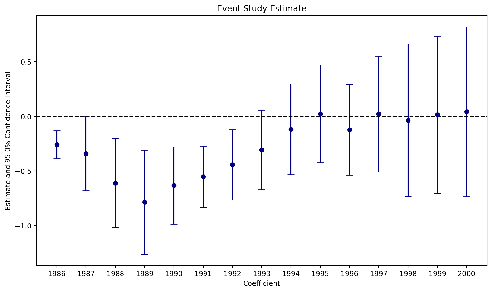

import numpy as np
import pandas as pd
import pyfixest as pf
%config InlineBackend.figure_format = "retina"The Mixtape with PyFixest
In this notebook, we translate some of the Python code in Scott Cunningham’s mixtape to PyFixest.
Chapter 8: Panel Data
Instead of demeaning by hand and then fitting the model via statsmodels, we just let PyFixest do all the work for us.
# read the data from github & load into pandas
url = "https://raw.githubusercontent.com/scunning1975/mixtape/master/sasp_panel.dta"
sasp = pd.read_stata(url)
sasp.head()| id | session | age | age_cl | appearance_cl | bmi | schooling | asq_cl | provider_second | asian_cl | ... | hispanic | other | white | asq | cohab | married | divorced | separated | nevermarried | widowed | |
|---|---|---|---|---|---|---|---|---|---|---|---|---|---|---|---|---|---|---|---|---|---|
| 0 | 243.0 | 2.0 | 27.0 | 30.0 | 5.0 | NaN | 11.0 | 900.0 | 1. No | 0.0 | ... | 0.0 | 0.0 | 0.0 | 729.0 | 1.0 | 0.0 | 0.0 | 0.0 | 0.0 | 0.0 |
| 1 | 397.0 | 4.0 | 28.0 | 56.0 | 5.0 | 28.971931 | 16.0 | 3136.0 | 1. No | 0.0 | ... | 0.0 | 0.0 | 1.0 | 784.0 | 0.0 | 1.0 | 0.0 | 0.0 | 0.0 | 0.0 |
| 2 | 598.0 | 4.0 | 50.0 | 52.0 | 6.0 | 21.453857 | 16.0 | 2704.0 | 1. No | 0.0 | ... | 0.0 | 0.0 | 1.0 | 2500.0 | 0.0 | 0.0 | 1.0 | 0.0 | 0.0 | 0.0 |
| 3 | 28.0 | 1.0 | 41.0 | 72.0 | 5.0 | 24.028320 | 12.0 | 5184.0 | 1. No | 0.0 | ... | 0.0 | 0.0 | 1.0 | 1681.0 | 0.0 | 0.0 | 1.0 | 0.0 | 0.0 | 0.0 |
| 4 | 28.0 | 4.0 | 41.0 | 46.0 | 8.0 | 24.028320 | 12.0 | 2116.0 | 1. No | 0.0 | ... | 0.0 | 0.0 | 1.0 | 1681.0 | 0.0 | 0.0 | 1.0 | 0.0 | 0.0 | 0.0 |
5 rows × 31 columns
# some initial data cleaning
sasp = sasp.dropna()
# order by id and session
sasp.sort_values("id", inplace=True)
# create balanced panel
times = len(sasp.session.unique())
in_all_times = (
sasp.groupby("id")["session"].apply(lambda x: len(x) == times).reset_index()
)
in_all_times.rename(columns={"session": "in_all_times"}, inplace=True)
balanced_sasp = pd.merge(in_all_times, sasp, how="left", on="id")
balanced_sasp = balanced_sasp[balanced_sasp.in_all_times]
provider_second = np.zeros(balanced_sasp.shape[0])
provider_second[balanced_sasp.provider_second == "2. Yes"] = 1
balanced_sasp.provider_second = provider_second# define formulas
covars = """
age + asq + bmi + hispanic + black + other + asian + schooling + cohab +
married + divorced + separated + age_cl + unsafe + llength + reg + asq_cl +
appearance_cl + provider_second + asian_cl + black_cl + hispanic_cl +
othrace_cl + hot + massage_cl
"""
# we fit on all covariates
fml_pooled = f"lnw ~ {covars}"
# we fit on all covariates and add one-hot encoded id fixed effects
fml_onehot = f"lnw ~ {covars} + C(id)"
# we fit on all covariates and swipe out the fixed effects (i.e. we apply the within transformation via pyfixest.feols)
fml_fe = f"lnw ~ {covars} | id"%%capture
fit_pooled = pf.feols(fml=fml_pooled, data=balanced_sasp, vcov={"CRV1": "id"})
fit_fe = pf.feols(fml=fml_fe, data=balanced_sasp, vcov={"CRV1": "id"})pf.etable(
[fit_pooled, fit_fe],
model_heads=["POLS", "FE"],
keep=["unsafe", "llength", "reg"],
labels={
"unsafe": "Unprotected sex with client of any kind",
"llength": "Ln(Length)",
"reg": "Client was a Regular",
},
digits=6,
)| lnw | ||
|---|---|---|
| POLS | FE | |
| (1) | (2) | |
| coef | ||
| Unprotected sex with client of any kind | 0.013407 (0.042455) |
0.051034 (0.028283) |
| Ln(Length) | -0.308251*** (0.040905) |
-0.434506*** (0.024323) |
| Client was a Regular | -0.047007 (0.033282) |
-0.037341* (0.018761) |
| fe | ||
| id | - | x |
| stats | ||
| Observations | 1028 | 1028 |
| S.E. type | by: id | by: id |
| R2 | 0.302643 | 0.832214 |
| R2 Within | - | 0.515959 |
| Significance levels: * p < 0.05, ** p < 0.01, *** p < 0.001. Format of coefficient cell: Coefficient (Std. Error) | ||
Our point estimates match the Stata results that Scott reports in the mixtape exactly. The standard errors differ slightly due to differences in small sample adjustments in Stata and Pyfixest. See here for an overview of how pyfixest handles small sample adjustments (tldr - exactly like r-fixest).
Chapter 9: Difference-in-Differences
Code Example 1
abortion = pd.read_stata(
"https://raw.githubusercontent.com/scunning1975/mixtape/master/abortion.dta"
)
abortion = abortion[~pd.isnull(abortion.lnr)]
abortion_bf15 = abortion[abortion.bf15 == 1]
# pf throws error when weights are 0
abortion_bf15 = abortion_bf15[abortion_bf15.totpop > 0]
abortion_bf15["year"] = abortion_bf15["year"].astype(int)
abortion_bf15.head()| fip | age | race | year | sex | totcase | totpop | rate | totrate | id | ... | female | lnr | t | younger | fa | pi | wm15 | wf15 | bm15 | bf15 | |
|---|---|---|---|---|---|---|---|---|---|---|---|---|---|---|---|---|---|---|---|---|---|
| 19 | 1.0 | 15.0 | 2.0 | 1985 | 2 | 5683.0 | 106187 | 6527.500000 | 5351.899902 | 14.0 | ... | 1.0 | 8.783779 | 1.0 | 1.0 | 1.0 | 0.0 | 0.0 | 0.0 | 0.0 | 1.0 |
| 39 | 1.0 | 15.0 | 2.0 | 1986 | 2 | 5344.0 | 106831 | 6351.200195 | 5002.299805 | 14.0 | ... | 1.0 | 8.756399 | 2.0 | 1.0 | 1.0 | 0.0 | 0.0 | 0.0 | 0.0 | 1.0 |
| 71 | 1.0 | 15.0 | 2.0 | 1987 | 2 | 4983.0 | 106496 | 5759.100098 | 4679.000000 | 14.0 | ... | 1.0 | 8.658537 | 3.0 | 1.0 | 1.0 | 1.0 | 0.0 | 0.0 | 0.0 | 1.0 |
| 89 | 1.0 | 15.0 | 2.0 | 1988 | 2 | 5276.0 | 105238 | 6139.600098 | 5013.399902 | 14.0 | ... | 1.0 | 8.722515 | 4.0 | 1.0 | 1.0 | 1.0 | 0.0 | 0.0 | 0.0 | 1.0 |
| 106 | 1.0 | 15.0 | 2.0 | 1989 | 2 | 5692.0 | 102956 | 5951.500000 | 5528.600098 | 14.0 | ... | 1.0 | 8.691399 | 5.0 | 1.0 | 1.0 | 1.0 | 0.0 | 0.0 | 0.0 | 1.0 |
5 rows × 39 columns
# we use the i() operator pyfixest provides, as it allows us to easily set the
# reference year, and works smoothly with the iplot() method
fml = """lnr ~ i(year, repeal, ref = 1985) + C(repeal) + C(year) + C(fip)
+ acc + ir + pi + alcohol + crack + poverty + income + ur
"""
fit = pf.feols(fml=fml, data=abortion_bf15, weights="totpop", vcov={"CRV1": "fip"})
pf.iplot(
fit,
coord_flip=False,
plot_backend="matplotlib",
title="Event Study Estimate",
cat_template="{value}",
)C:\Users\alexa\Documents\pyfixest\pyfixest\estimation\feols_.py:2759: UserWarning:
1 variables dropped due to multicollinearity.
The following variables are dropped: ['C(fip)[T.53.0]'].
warnings.warn(